Recorrido completo como paciente autenticado: flujos post-login, P&R, exportación PDF, estado de ánimo y directorio comunitario
La gráfica de "Mi estado de ánimo (últimos 7 días)" repite la etiqueta "25 may" tres veces en el eje X cuando hay más de un registro el mismo día. No rompe la funcionalidad pero confunde la lectura del gráfico y genera desconfianza en los datos.
El modal de estado de ánimo accesible desde el Dashboard (botón "+😊") no tiene campo de fecha — siempre registra hoy. Un paciente que quiera registrar el estado de un día pasado no puede hacerlo. La página de UsuarioEstadoAnimo tampoco tiene este campo.
?id= en lugar de slug Dashboard
Info
El widget de P&R del Dashboard genera URLs tipo /Preguntas/Detalles?id=85e910de…, mientras que las preguntas reales usan slugs (/Preguntas/cuanto-tiempo-dura…). La redirección funciona, pero la URL expone el GUID interno antes de redirigir.
La fila "Calprotectina Cuantitativa" en el widget de laboratorio muestra "—" tanto en Resultado como en Fecha. Esto se debe al bug D-05 (400 en ActualizarResultado): el registro fue creado pero nunca pudo guardarse. Un usuario real no entendería por qué su resultado aparece vacío sin ningún mensaje de error.
ActualizarResultado retorna 400)Al crear una pregunta exitosamente, la página cambia de "Haz tu Pregunta" a "Editar Pregunta" en la misma URL (que ahora incluye el GUID). El mensaje de éxito aparece con el link "Ir a la pregunta para ver las respuestas". El usuario no es redirigido automáticamente a la pregunta pública.
/Preguntas/[slug] tras la creación exitosa (o al menos mostrar un banner prominente con un countdown).El sidebar de la página de pregunta muestra en "Preguntas Similares" la misma pregunta que se está viendo. Genera confusión y parece un bug en la query de similitud.
WHERE Id != @currentId faltante).El mailto del share sidebar usa https://eiibd.com/Preguntas/… en lugar de la URL actual del servidor. Esto es probablemente intencional (las preguntas se comparten con la URL de producción), pero vale la pena confirmarlo ya que en ambiente local podría generar confusión durante testing.
Los botones de votación (👍/👎) aparecen disabled en la página de la pregunta cuando el usuario autenticado es el autor. Este es el comportamiento correcto y esperado (no puedes votar tu propia pregunta). Se registra aquí para confirmar que es intencional y no un bug visual.
Tanto el botón "Exportar" con rango personalizado como el link de acceso rápido "Último mes" generan y descargan el PDF correctamente (eiibd_Berletzis_*.pdf). No se detectaron errores ni timeouts.
eiibd_Berletzis_20260425_7090dbac.pdfeiibd_Berletzis_20260425_e6351c8b.pdfAl guardar un estado de ánimo desde el modal del Dashboard, el modal se cierra sin ningún toast/notificación de éxito. El usuario no sabe si el registro fue guardado o si hubo un error silencioso.
UsuarioEstadoAnimo sí aparece el emoji nuevo en la lista de inmediato. Aquí no hay feedback.El modal de ánimo incluye tres custom selects (condición, síntoma, tratamiento) con búsqueda. Esto añade complejidad cognitiva a un registro que debería ser rápido. El "flujo mínimo" (solo seleccionar emoción y guardar) es correcto, pero los campos opcionales ocupan espacio visual prominente.
El directorio muestra "0 médicos encontrados" en el ambiente local. Sin datos de prueba, es imposible verificar el renderizado de las cards de médicos, los filtros por estado/área, el badge de verificación y el detalle del perfil. Se recomienda tener al menos 5 médicos de muestra en el seed local.
El combobox de "Todos los estados" solo contiene esa opción. Las opciones de estados se generan dinámicamente desde los médicos registrados, por lo que en un directorio vacío no hay estados disponibles. Sin embargo, incluso en producción, esto podría ser un problema si los médicos no tienen estado asignado.
La búsqueda por texto genera ?Busqueda=García&Estado=&AreaId= en la URL mediante un GET request. Esto es correcto para SEO y permite compartir búsquedas. El resultado se muestra limpiamente aunque esté vacío.
Tras proponer un médico exitosamente, el servidor hace RedirectToPage("Detalle", new { id = medicoId }). Sin embargo, GetDetalleAsync filtra por VisiblePublicamente == true && Activo == true, y los médicos propuestos se crean con ambas flags en false (requieren aprobación admin). El resultado es que el usuario ve 404 · Página no encontrada inmediatamente después de una propuesta exitosa.
TempData y solo aparece si el usuario navega manualmente al Directorio — completamente invisible para el usuario que ve la 404.Proponer.cshtml.cs línea 72: Cambiar el redirect de RedirectToPage("Detalle", …) a RedirectToPage("/DirectorioMedicos/Index") (o a una página de confirmación dedicada).GetDetalleAsync para mostrar el perfil al proponente aunque no sea público todavía (con badge "En revisión").place_changed no dispara en Playwright headless — autocomplete inutilizable en tests automáticos Proponer
Bajo (contexto automático)
El evento place_changed de Google Maps Places Autocomplete no se dispara cuando la selección se hace mediante ArrowDown + Enter via Playwright. El texto visible del input se actualiza pero los campos ocultos (Estado, Latitud, Longitud) quedan vacíos. Esto no afecta a usuarios reales que hagan click en la sugerencia, pero confirma que el flujo no es testeable automáticamente sin mockear el SDK de Maps.
mousedown+mouseup+click) tampoco dispara. Solo el SDK de Google Maps tiene el handle del evento place_changed.data-testid al campo oculto de Estado y un modo de fallback para tests (o mockear la API de Maps en el entorno de test).No existe ninguna página o vista que muestre al proponente el estado de su propuesta (pendiente, aprobado, rechazado). Una vez propuesto el médico, el usuario no tiene forma de saber qué pasó con su aporte sin que un admin lo apruebe y el médico aparezca en el directorio.
El campo Input.Estado es [Required] en el servidor pero es un <input type="hidden"> que solo se rellena cuando el usuario selecciona una sugerencia del autocomplete de Google Maps. Si el usuario escribe la ciudad manualmente (sin hacer click en la sugerencia), el campo queda vacío, el ModelState falla con "El estado es obligatorio" y la página vuelve a renderizar el formulario en blanco, sin mostrar ningún mensaje de error al usuario.
asp-validation-for="Input.Estado" en el form, ni un div asp-validation-summarygoogle.maps.places.Autocomplete) está deprecado desde marzo 2025. New customers no pueden usarlo. Si la key caduca, el autocomplete dejará de funcionar y nadie podrá proponer médicos.asp-validation-summary="ModelOnly" al form para mostrar errores de servidor.google.maps.places.PlaceAutocompleteElement (nuevo API) o agregar fallback de texto libre para el estado.El dropdown de País muestra "Mexico", "Brazil", "Dominican Republic", "Spain" en inglés. El resto de la UI está en español. El mismatch es evidente y reduce la confianza del usuario.
Paises tiene el campo PaisNombre con valores en inglés.PaisNombreEs.button[type="submit"] del DOM es el botón de logout del top-menu Proponer
Crítico
Al intentar hacer submit programático con document.querySelector('button[type="submit"]'), se activa el botón de Cerrar sesión del top-menu, que es el primer submit del DOM, y se cierra la sesión del usuario. Aunque esto es un artefacto del método de testing automático, revela una vulnerabilidad potencial: si algún script de la página intentara hacer submit del formulario por referencia genérica, cerraría la sesión.
type="submit", antes que el formulario de Proponer en el DOM.id y que los scripts de la página hagan referencia a él por ID, no por selector genérico.La validación cliente-side de JavaScript solo muestra "El nombre completo es obligatorio" como único error visible. El campo Estado (hidden, requerido en servidor) no tiene representación en la UI de error. El usuario ve la validación del nombre si no lo llena, pero nunca ve el error de Estado aunque sea el bloqueante real del submit.
#dir-estado-input está vacío antes de submit, y mostrar un mensaje: "Por favor selecciona una ciudad del autocompletado."?id= → slug funciona: Los links con query param (usados en el Dashboard widget) redirigen correctamente a la URL con slug. No hay links rotos.| ID | Flujo | Descripción | Severidad | Acción sugerida |
|---|---|---|---|---|
| PROP-01 | Proponer médico | Form falla silenciosamente si no se usa autocomplete | Crítico | Agregar asp-validation-summary + validación JS del campo Estado; migrar Google Maps API |
| PROP-03 | Proponer médico | Primer button[type="submit"] en DOM es logout |
Crítico | Verificar que el botón "Agregar" tiene id propio y no depende de selector genérico |
| D-04 | Dashboard | Lab muestra "—" sin explicación (relacionado con bug 400) | Alto | Resolver bug handler ActualizarResultado (400); agregar tooltip en "—" |
| PROP-04 | Proponer médico | Validación no muestra error de Estado al usuario | Alto | Agregar validación JS explícita para #dir-estado-input vacío |
| D-01 | Dashboard | Eje X duplicado en gráfica de ánimo con múltiples registros por día | Medio | Agrupar datos por día antes de renderizar gráfica |
| PR-01 | P&R | No hay redirección automática al publicar pregunta | Medio | Redirigir a /Preguntas/[slug] tras creación exitosa |
| PR-02 | P&R | "Preguntas similares" incluye la pregunta actual | Medio | Agregar WHERE Id != @currentId a la query |
| DIR-02 | Directorio | Filtro de estado vacío — no hay catálogo fijo | Medio | Cargar estados de México desde tabla catálogo fija |
| PROP-02 | Proponer médico | Países en inglés en UI en español | Medio | Traducir PaisNombre a español en la tabla Paises |
| D-02 | Dashboard | Modal de ánimo no tiene campo de fecha | Bajo | Agregar date picker opcional con default = hoy |
| EA-01 | Estado de ánimo | Modal cierra sin confirmación visual | Bajo | Agregar toast "✅ Estado guardado" después del cierre |
| EA-02 | Estado de ánimo | Campos opcionales en modal añaden complejidad visual | Bajo | Colapsar campos opcionales por defecto |
| D-03 | Dashboard | Link P&R usa ?id= antes de redirigir a slug |
Info | Generar link con slug directamente en widget |
| PR-03 | P&R | Email de compartir usa dominio de producción | Info | Confirmar si es intencional para todos los entornos |
| PROP-05 | Proponer médico | Redirect post-submit va a Detalle/{id} → 404 (médico invisible hasta aprobación) | Crítico | Cambiar redirect a RedirectToPage("/DirectorioMedicos/Index") en Proponer.cshtml.cs:72 |
| DIR-04 | Directorio | Sin página "mis propuestas" — proponente no sabe el estado de su aporte | Alto | Agregar sección "Mis propuestas" en perfil de usuario o enviar email de confirmación |
| PROP-06 | Proponer médico | place_changed de Google Maps no dispara en Playwright — no testeable automáticamente |
Bajo | Mockear Maps API en entorno de test o agregar fallback |
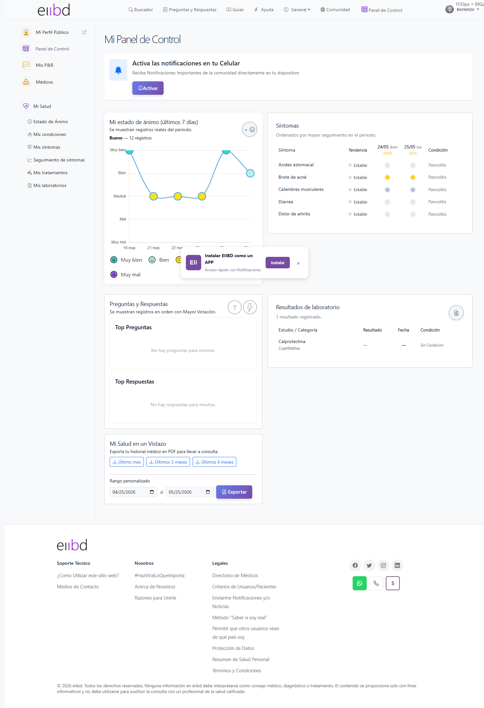
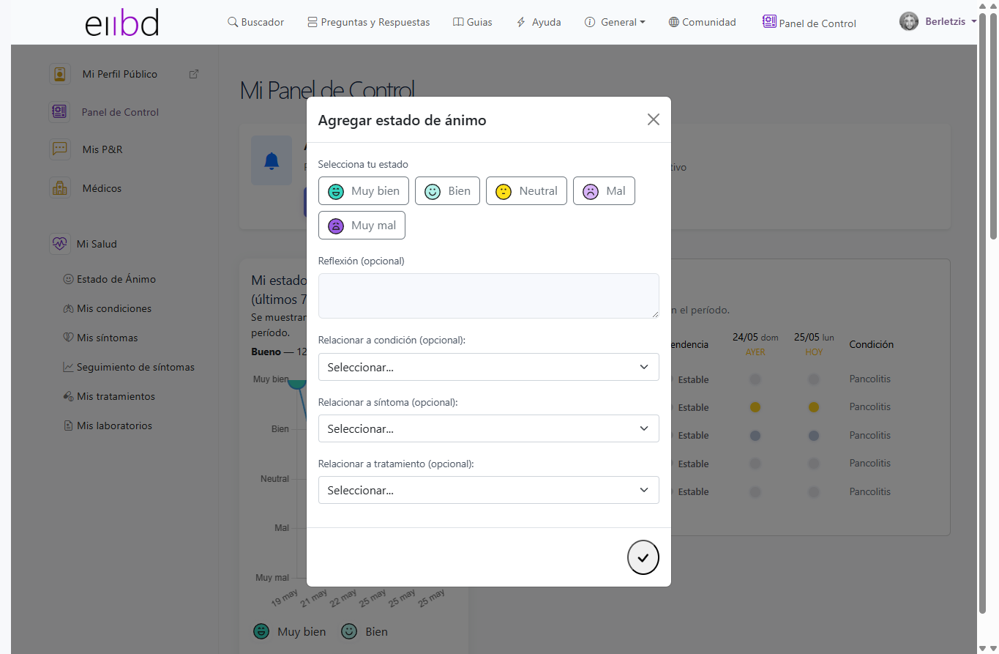
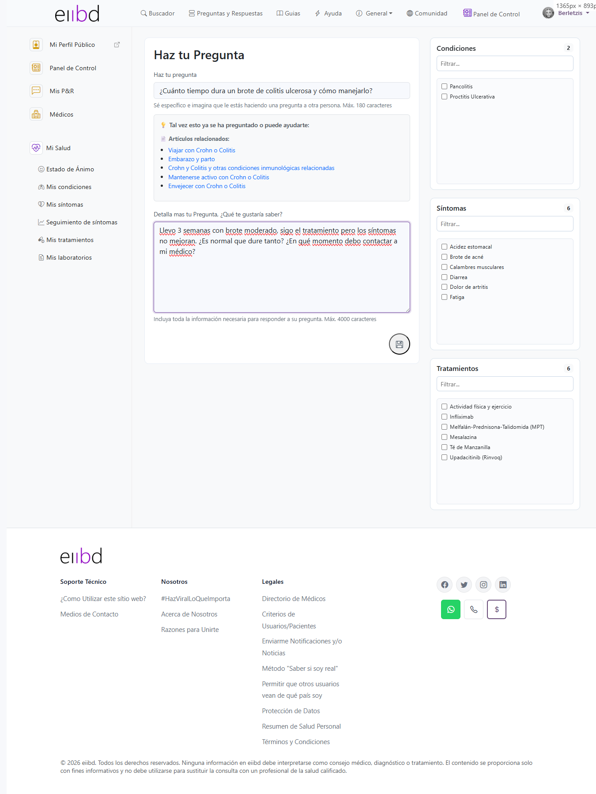
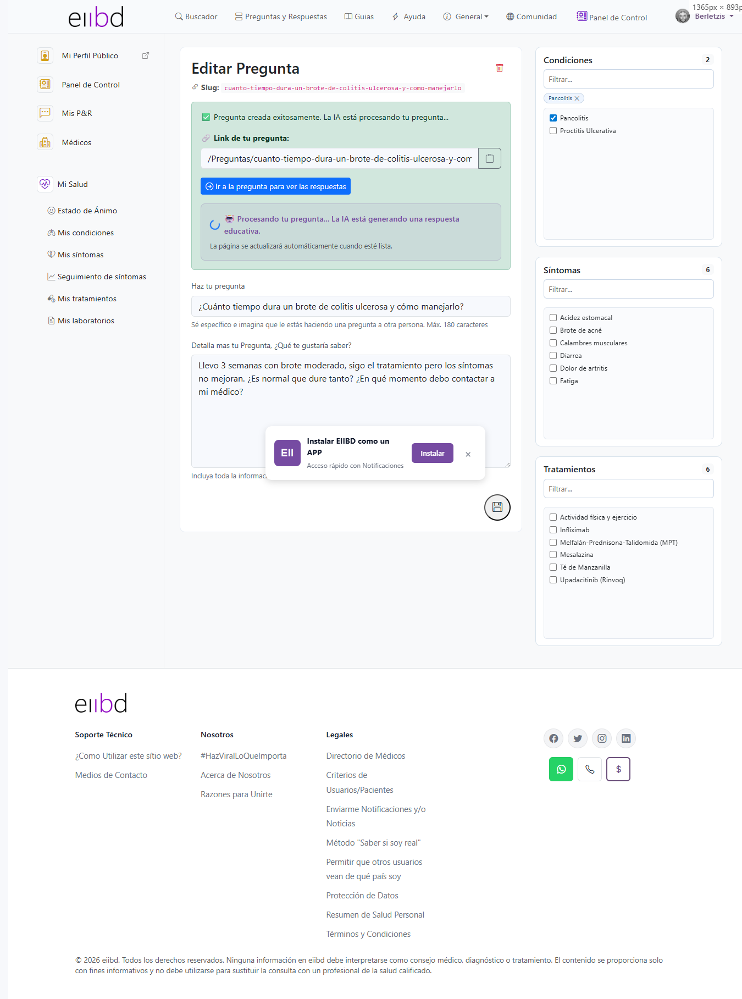
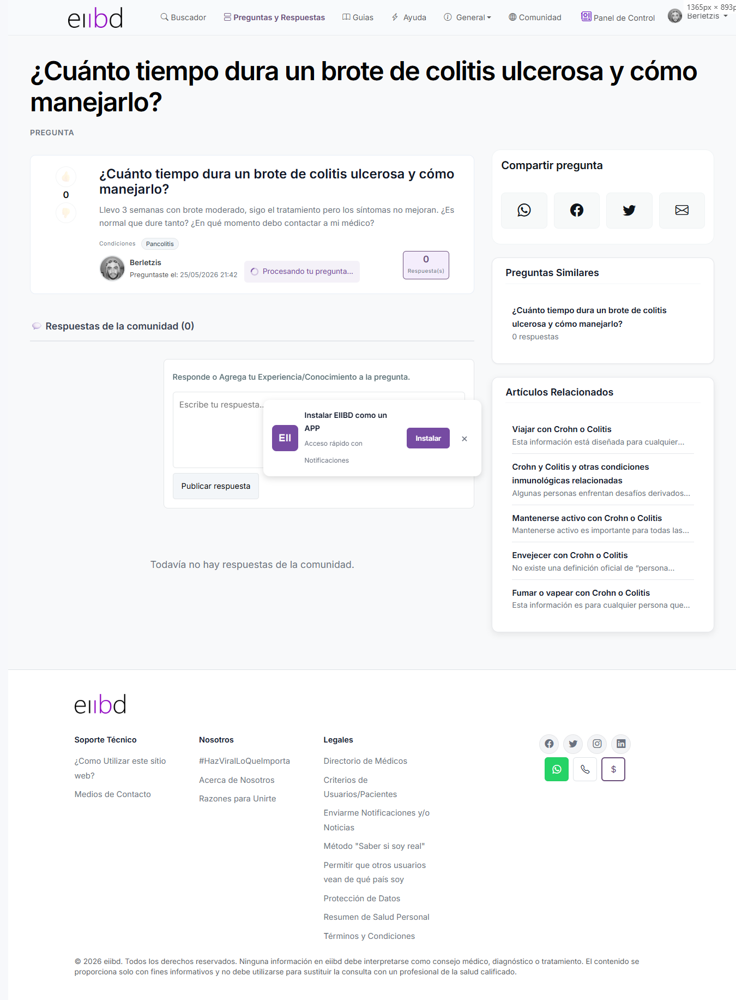
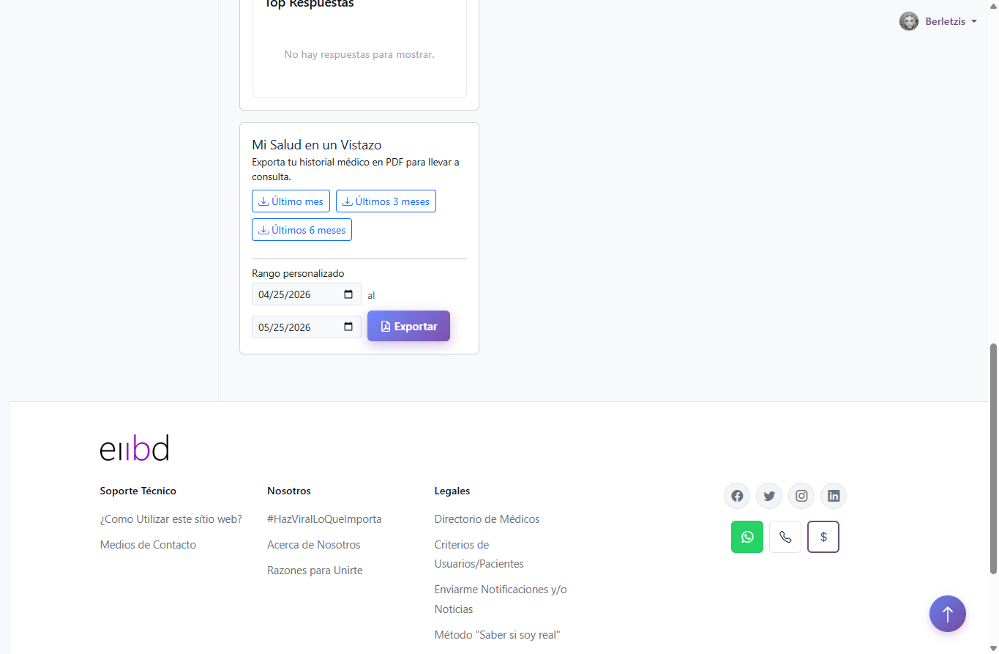
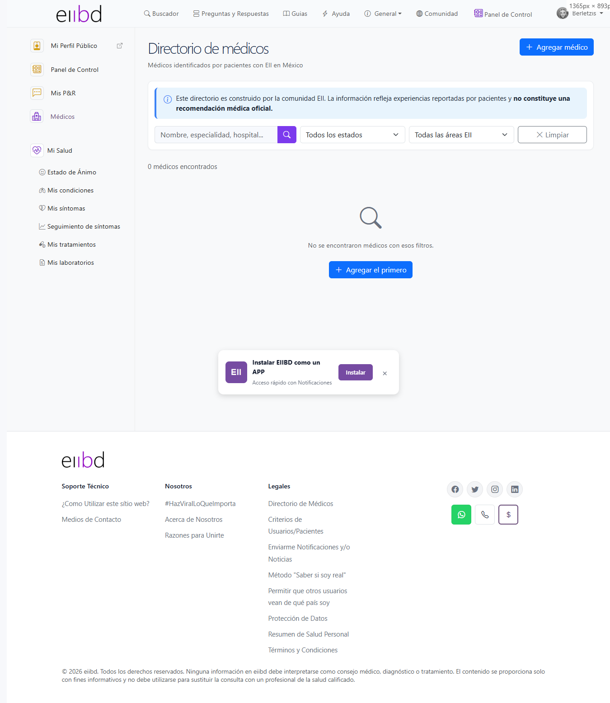
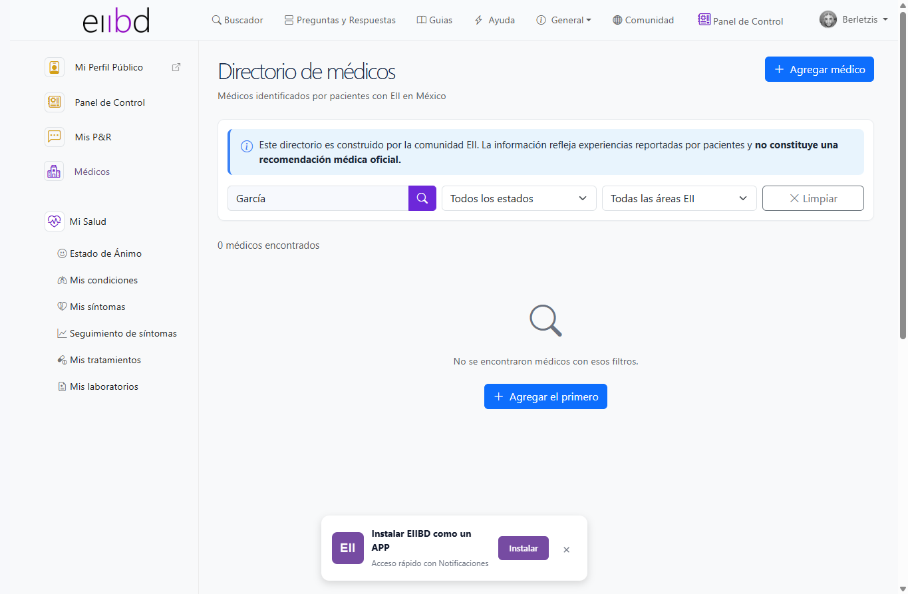
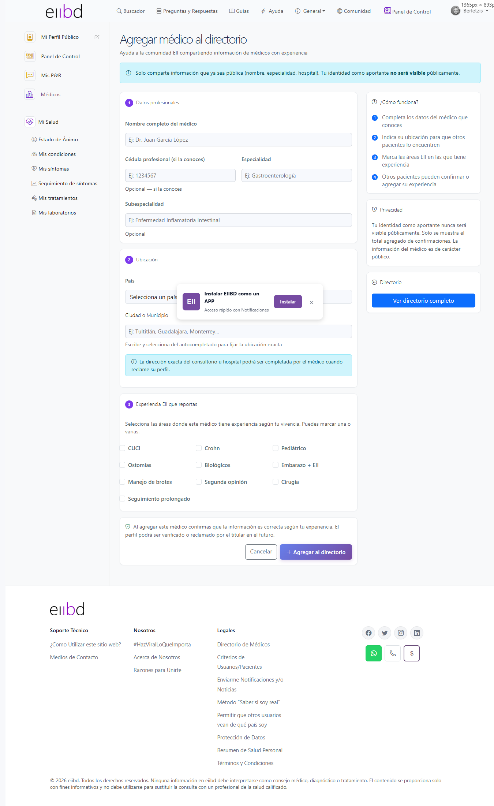
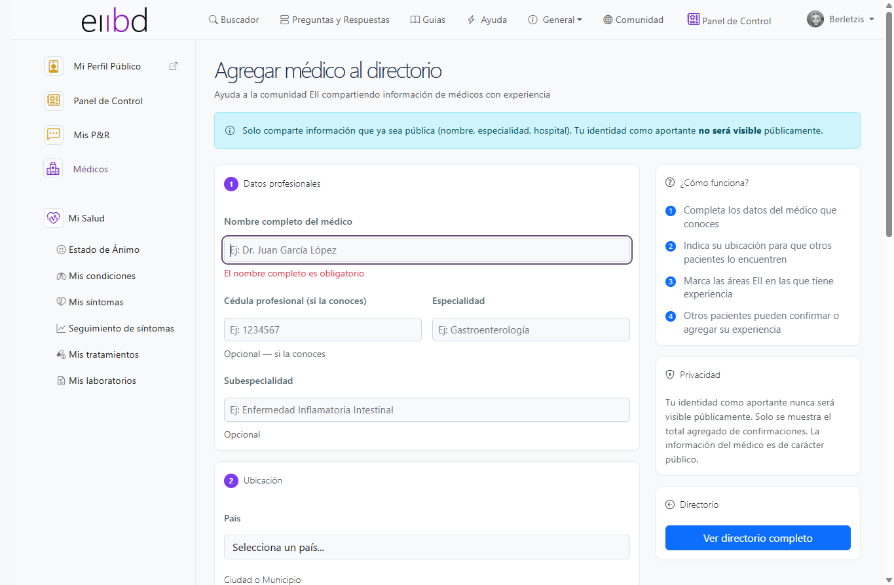
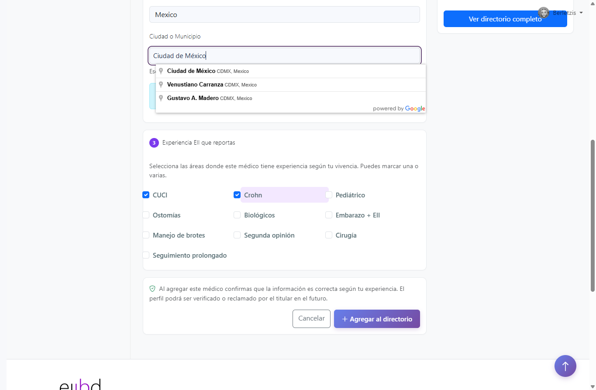
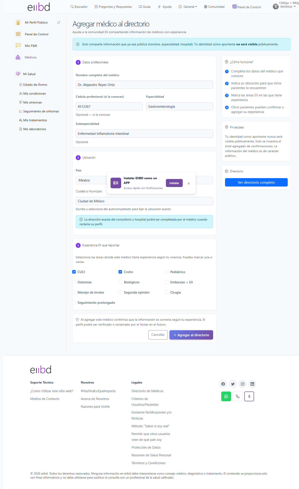
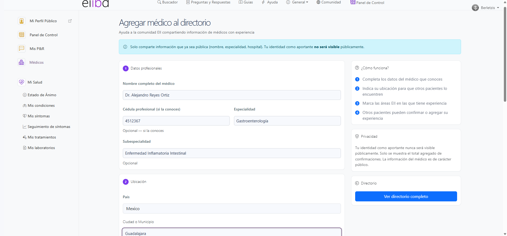
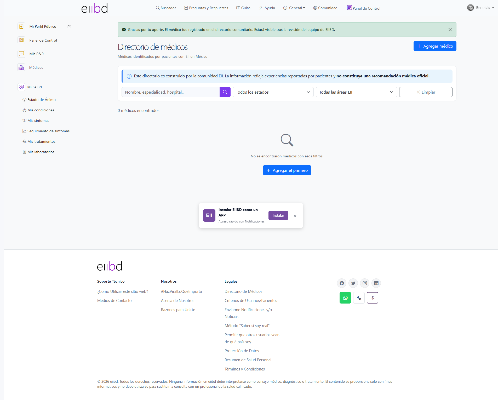
Generado por Playwright MCP · Claude Code · 2026-05-26 · eiibd UX Testing